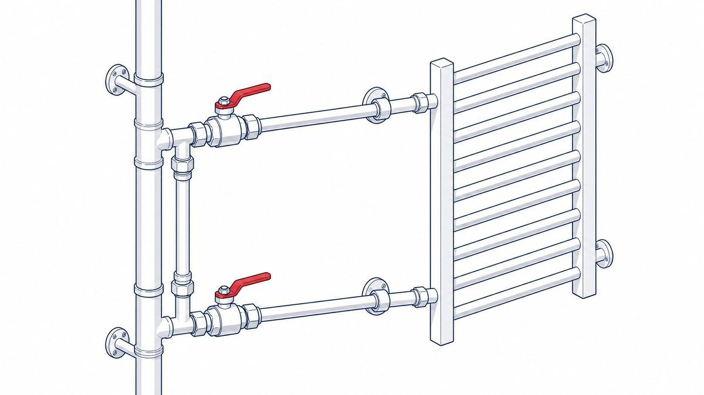

лесенка 500×800 мм из нержавейки AISI 304 отдаёт 500–700 Вт и стоит 4 500–9 000 руб.; врезка в стояк ГВС без байпаса оставляет без горячей воды весь стояк; электрический прибор 400–600 Вт требует отдельной линии 3×2,5 мм², автомата 16 А и УЗО 30 мА; ошибка с межосевым расстоянием (500 вместо 400 мм) — это вскрытие плитки и 8 000–15 000 руб. на переделку.
Водяной, электрический или комбинированный
Водяной полотенцесушитель — часть системы ГВС: он греется, пока в стояке есть горячая вода. В многоквартирном доме его врезают в стояк ГВС или в контур отопления, в частном — подключают к бойлеру или коллектору. Теплоотдача при Δt 60 °C (подача 70 °C, воздух в ванной 20 °C) — 400–1200 Вт в зависимости от габарита. Минус один: в период летних отключений прибор холодный.
Электрический независим от стояка: 300–1000 Вт, работает круглый год, есть таймер и терморегулятор. Плата за независимость — расход электроэнергии и обязательная защита УЗО. Комбинированный совмещает два контура в одном корпусе: вода плюс ТЭН. Дороже, но не зависит от сезонных отключений.
| Тип | Источник тепла | Мощность | Цена 2026 | Когда выбирать |
|---|---|---|---|---|
| Водяной | стояк ГВС, отопление, бойлер | 400–1200 Вт | 4 500–9 000 руб. | есть стабильная ГВС, нужна сушка круглый год |
| Электрический | сеть 220 В | 300–1000 Вт | 6 000–15 000 руб. | нет ГВС, частые отключения, съёмная квартира |
| Комбинированный | ГВС + ТЭН | 700–1500 Вт | 12 000–25 000 руб. | хочется независимости без второй линии |
| Чугунный эмалированный | ГВС, отопление | 500–900 Вт | 1 500–4 000 руб. | бюджетный вариант в старый санузел |
Межосевое расстояние и габариты
Первый размер при покупке — межосевое расстояние (МОР): дистанция между осями подводок. Стандарт — 500 мм, встречаются 300, 400, 600 и 800 мм. Если выводы из стены уже сделаны под 500 мм, а куплен прибор с МОР 400 мм, придётся перепаковывать подводки или вскрывать плитку. Замер делают по центрам труб, а не по наружным краям.
Шаг секций — 40–50 мм, диаметр коллектора 25–32 мм (3/4 или 1 дюйм). Типовая лесенка 500×800: ширина 500 мм, высота 800 мм, глубина 90–120 мм, отступ от стены 30–50 мм. Для ванной 4–6 м² достаточно 500×600–500×800 мм и 6–8 секций.
| МОР | Габарит Ш×В | Секций | Теплоотдача при Δt 60 °C | Площадь ванной |
|---|---|---|---|---|
| 300 мм | 300×500 | 4–5 | 300–450 Вт | 2–3 м² |
| 400 мм | 400×600 | 5–6 | 400–550 Вт | 3–4 м² |
| 500 мм | 500×800 | 6–8 | 500–700 Вт | 4–6 м² |
| 600 мм | 600×900 | 8–10 | 700–900 Вт | 6–8 м² |
| 800 мм | 800×1000 | 10–12 | 900–1200 Вт | 8 м² и больше |
Мощность и расход электричества
Расчёт отталкивается от 100 Вт на 1 м² ванной плюс запас на сушку полотенец: 4 м² — 400–500 Вт, 6 м² — 600–700 Вт. Водяной отдаёт 80–120 Вт с секции при Δt 60 °C. При Δt 40 °C (подача 50 °C) теплоотдача падает примерно на 40 %: 8 секций дадут не 700, а 420 Вт, и полотенца будут сохнуть вдвое дольше.
Электрический 500 Вт при работе 3 часа в сутки — 1,5 кВт·ч, при тарифе 5,5 руб./кВт·ч это около 250 руб. в месяц. Терморегулятор с таймером срезает 30–40 %: прибор греется утром и вечером, а не круглосуточно.
| Площадь ванной | Нужная мощность | Водяной, секций | Электрический | Расход в месяц |
|---|---|---|---|---|
| 3 м² | 300–350 Вт | 4–5 | 300–400 Вт | 120–180 руб. |
| 4 м² | 400–500 Вт | 6 | 400–500 Вт | 180–250 руб. |
| 6 м² | 600–700 Вт | 8 | 600–700 Вт | 250–350 руб. |
| 8 м² | 800–900 Вт | 10 | 800–1000 Вт | 350–450 руб. |
Подключение к ГВС: байпас, краны, уклоны
В многоквартирном доме врезка в стояк ГВС без байпаса запрещена: перекрыв краны, вы оставите без горячей воды весь стояк. Байпас — перемычка между подводками диаметром не меньше диаметра стояка (обычно 25–32 мм) с двумя шаровыми кранами на отводах к прибору. Соединения — сгон с американкой, чтобы прибор снимался без резки труб.
Уклон подводок — 5–10 мм на 1 м в сторону прибора или спускника: воздух должен выходить, а не запирать верхние секции. В верхней точке ставят кран Маевского или автоматический воздухоотводчик. Работы согласовывают с управляющей компанией; самовольная врезка — предписание вернуть стояк в проектное состояние и штраф.

- Согласовать врезку с управляющей компанией и получить график отключения стояка.
- Перекрыть стояк в согласованное время, слить воду.
- Разметить МОР и высоту прибора по месту, проверить уровень.
- Врезать тройники и байпас, приварить или собрать на пресс-фитингах.
- Поставить шаровые краны, сгоны с американкой, воздухоотводчик.
- Навесить прибор, выставить отступ от стены 30–50 мм.
- Опрессовать 1,5 рабочего давления (6–10 бар) в течение 15 минут.
- Пустить воду, стравить воздух, проверить нагрев всех секций рукой.
Электрический вариант: линия и защита
Прибор запитывают отдельной линией, не от розеток ванной: кабель ВВГнг(А)-LS 3×2,5 мм², автомат 16 А, УЗО 30 мА (для влажных помещений лучше 10 мА). Розетка — минимум IP44 с защитной крышкой, вне зоны 0–2: не ближе 600 мм от борта ванны и душа, чтобы струя не попадала на контакты. Заземление обязательно: без него при пробое ТЭНа на корпусе появится фаза.
Терморегулятор выносят на сухую стену на высоте 900–1200 мм, датчик — внутрь корпуса или на обратку. Влагу в ванной никто не отменял: корпус терморегулятора должен быть IP44 и выше.
| Параметр | Значение | Норматив |
|---|---|---|
| Кабель | ВВГнг(А)-LS 3×2,5 мм² | ГОСТ 31565-2012 |
| Автомат | 16 А, характеристика C | ПУЭ 7, гл. 3.1 |
| УЗО | 30 мА, для влажных зон 10 мА | ПУЭ 7, п. 7.1.79 |
| Розетка | IP44 и выше, с крышкой | СП 256.1325800.2016 |
| Удаление от ванны | не менее 600 мм | ПУЭ 7, зоны 0–2 |
| Сопротивление изоляции | не ниже 0,5 МОм | ПУЭ 7, п. 1.8.37 |
Высота, отступы и крепление
Низ прибора — 600–900 мм от пола, верх — не выше 1700 мм: полотенце достаётся рукой, голова не задевает. Над унитазом верхнюю точку поднимают не ниже 1500 мм. Отступ от стены — 30–50 мм у водяного (нужна циркуляция воздуха) и 20–30 мм у электрического.
Крепление — дюбель 8×60 в бетон или кирпич. В гипсокартон только через закладную 40×40 мм: мокрые полотенца весят 8–12 кг, и без закладной прибор вырвет лист вместе с плиткой. Кронштейны ставят по уровню, иначе секции будут смотреться заваленными, а вода — скапливаться в одном углу.
Цены 2026
| Позиция | Цена | Комментарий |
|---|---|---|
| Водяной 500×800, нержавейка AISI 304 | 4 500–9 000 руб. | 6–8 секций, стенка 1,5–2 мм |
| Водяной дизайнерский | 12 000–30 000 руб. | чёрный матовый, скрытые подводки |
| Электрический 400–600 Вт | 6 000–15 000 руб. | с терморегулятором и таймером |
| Комбинированный | 12 000–25 000 руб. | вода плюс ТЭН |
| Чугунный эмалированный | 1 500–4 000 руб. | тяжёлый, инерционный |
| Монтаж с байпасом и врезкой | 6 000–12 000 руб. | включая опрессовку |
| Монтаж электрического | 4 000–9 000 руб. | линия до 5 м, розетка, УЗО |
| Демонтаж старого прибора | 1 500–3 000 руб. | с заглушкой подводок |
Ошибки и во что они обходятся
| Ошибка | Последствие | Цена исправления |
|---|---|---|
| Врезка без байпаса | отключение стояка, предписание УК | 6 000–12 000 руб. |
| МОР не совпал с выводами | перепаковка подводок, вскрытие плитки | 8 000–15 000 руб. |
| Подводки заужены до 1/2 дюйма | слабый нагрев, шум в трубах | 3 000–6 000 руб. |
| Нет уклона и воздушника | верхние секции холодные | 1 500–4 000 руб. |
| Электрический без УЗО | риск поражения током во влажной зоне | 3 000–7 000 руб. |
| Крепление в гипсокартон без закладной | обрыв прибора с плиткой | 5 000–10 000 руб. |
Чек-лист перед покупкой
- Замерить МОР по центрам подводок и диаметр труб (25 или 32 мм).
- Проверить, есть ли байпас и краны на стояке; если нет — заложить в смету.
- Посчитать нужную мощность: 100 Вт на 1 м² ванной.
- Уточнить тип стен под крепление: бетон, кирпич, гипсокартон с закладной.
- Для электрического — проверить, есть ли свободное место в щите под автомат и УЗО.
- Согласовать врезку в стояк с управляющей компанией.
- Взять прибор с гарантией от 5 лет и паспортом с указанием рабочего давления.
Частые вопросы
Можно ли поставить полотенцесушитель без байпаса?
В многоквартирном доме — нет. Перекрыв краны, вы остановите горячую воду всему стояку, а управляющая компания выпишет предписание вернуть схему в проектное состояние. Байпас диаметром не меньше стояка стоит 6 000–12 000 руб. вместе с врезкой.
Что будет, если МОР прибора не совпадёт с выводами?
Придётся либо перепаковывать подводки (сдвигать их на 50–100 мм), либо вскрывать плитку и переносить выводы. Второй вариант — 8 000–15 000 руб. плюс восстановление гидроизоляции и облицовки.
Хватит ли 6 секций на ванную 5 м²?
Хватит: 6 секций при Δt 60 °C дают 500–600 Вт, а для 5 м² нужно 500 Вт. Если вода в стояке холоднее 55 °C, берите 8 секций — при Δt 40 °C теплоотдача падает на 40 %.
Сколько электричества тратит электрический полотенцесушитель?
Прибор 500 Вт при работе 3 часа в сутки — 1,5 кВт·ч, около 250 руб. в месяц при тарифе 5,5 руб./кВт·ч. Терморегулятор с таймером снижает расход на 30–40 %.
На какой высоте вешать прибор?
Низ — 600–900 мм от пола, верх — не выше 1700 мм. Над унитазом верхнюю точку поднимают не ниже 1500 мм. Отступ от стены 30–50 мм у водяного и 20–30 мм у электрического.
Чем нержавейка AISI 304 лучше эмалированной стали?
Стенка 1,5–2 мм не боится гидроудара и перепадов давления до 10 бар, эмаль же скалывается от удара и корродирует в месте скола. Разница в цене — 3 000–5 000 руб., срок службы отличается в два раза: 15–20 лет против 7–10.
Источники
Материал подготовлен с опорой на следующие документы и данные:
Дисклеймер
Материалы журнала «Ремонт на примерах» носят информационный характер. Приведённые цены, сроки и нормативы являются ориентировочными: они зависят от региона, состояния объекта, уровня исполнителей и текущей рыночной ситуации, поэтому не могут служить точной сметой или гарантией результата. Перед началом работ проконсультируйтесь со специалистами и проверяйте актуальные требования нормативных документов. Редакция не несёт ответственности за решения, принятые на основании этих материалов.